Using Self-Organizing Maps with SOMbrero for contingency tables
10 août, 2020
Source:vignettes/d-doc-korrespSOM.Rmd
d-doc-korrespSOM.RmdTo limit this documentation size, most figures are not displayed in the version of the vignette included in the package. To see all figures, you can rerun the vignettes, changing the following option to TRUE:
knitr::opts_chunk$set(include = TRUE)
Alternatively, this compilation is also available at: http://sombrero.nathalievialaneix.eu/articles/d-doc-korrespSOM.html
Basic package description
SOMbrero implements different variants of the Self-Organizing Map algorithm (also called Kohonen’s algorithm). To process a given dataset with the SOM algorithm, you can use the function trainSOM().
This documentation only considers the case of contingency tables.
Arguments
The trainSOM function has several arguments, but only the first one is required. This argument is x.data which is the dataset used to train the SOM. In this documentation, it is passed to the function as a matrix or a data frame and encodes a contingency tables (the entries are the frequencies of joint observations for two factors). Column and row names must be supplied to ease the interpretation.
The function handles over options, which are the same as the ones passed to initSOM (they are parameters defining the algorithm, see help(initSOM) for further details).
Case study: the presidentielles2002 data set
The presidentielles2002 data set provides the number of votes for the first round of the 2002 French presidential election for each of the 16 candidates in all of the 106 French administrative districts called “départements”. Further details about this data set and the 2002 French presidential election are given with help(presidentielles2002).
## MEGRET LEPAGE GLUCKSTEIN BAYROU CHIRAC LE_PEN
## 667043 535875 132696 1949219 5666021 4804772
## TAUBIRA SAINT_JOSSE MAMERE JOSPIN BOUTIN HUE
## 660515 1204801 1495774 4610267 339157 960548
## CHEVENEMENT MADELIN LAGUILLER BESANCENOT
## 1518568 1113551 1630118 1210562(the two candidates that ran the second round of the election were Jacques Chirac and the far-right candidate Jean-Marie Le Pen)
Training the SOM
set.seed(01091407) korresp.som <- trainSOM(x.data = presidentielles2002, dimension = c(8,8), type = "korresp", scaling = "chi2", nb.save = 10, topo = "hexagonal", maxit = 500) korresp.som
## Self-Organizing Map object...
## online learning, type: korresp
## 8 x 8 grid with hexagonal topology
## neighbourhood type: gaussian
## distance type: euclideanAs the energy is registered during the intermediate backups, we can take a look at its evolution
plot(korresp.som, what = "energy")
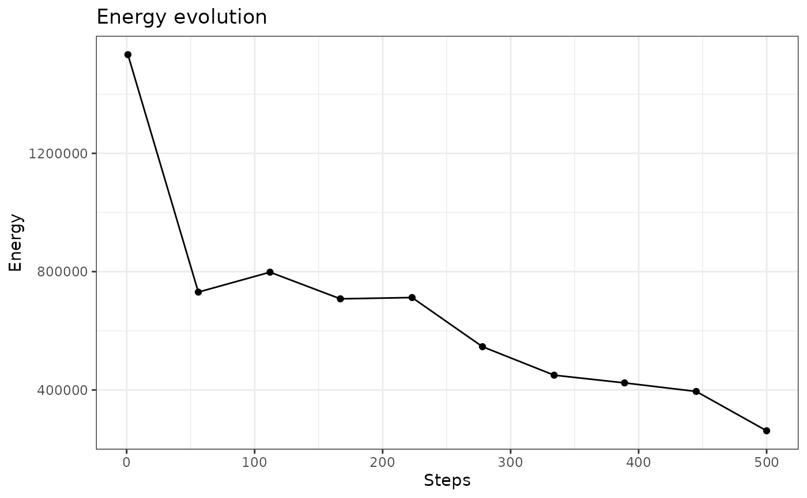
which has approximatively stabilized at iteration 500.
Resulting clustering
The clustering component contains the final classification of the dataset. As both row and column variables are classified, the length of the resulting vector is equal to the sum of the number of rows and the number of columns.
NB: The clustering component shows first the column variables (here, the candidates) and then the row variables (here, the départements).
korresp.som$clustering
## MEGRET LEPAGE GLUCKSTEIN
## 8 8 8
## BAYROU CHIRAC LE_PEN
## 40 33 61
## TAUBIRA SAINT_JOSSE MAMERE
## 8 4 32
## JOSPIN BOUTIN HUE
## 25 8 6
## CHEVENEMENT MADELIN LAGUILLER
## 32 24 4
## BESANCENOT ain aisne
## 5 61 61
## allier alpes_de_haute_provence hautes_alpes
## 59 57 57
## alpes_maritimes ardeche ardennes
## 64 59 57
## ariege aube aude
## 57 57 59
## aveyron bouches_du_rhone calvados
## 57 4 53
## cantal charente charente_maritime
## 57 57 43
## cher correze corse_sud
## 57 57 57
## haute_corse cote_d'or cotes_d'armor
## 57 61 25
## creuse dordogne doubs
## 57 59 61
## drome eure eure_et_loir
## 60 61 59
## finistere gard haute_garonne
## 17 62 9
## gers gironde herault
## 57 1 55
## ille_et_vilaine indre indre_et_loire_
## 17 57 61
## isere jura landes
## 56 57 57
## loir_et_cher loire haute_loire
## 59 63 57
## loire_atlantique loiret lot
## 10 61 57
## lot_et_garonne_ lozere maine_et_loire_
## 59 57 45
## manche marne haute_marne
## 60 61 57
## mayenne meurthe_et_moselle meuse
## 57 62 57
## morbihan moselle nievre
## 26 64 57
## nord oise orne
## 6 63 57
## pas_de_calais puy_de_dome pyrenees_atlantiques
## 2 53 25
## hautes_pyrenees pyrenees_orientales bas_rhin
## 57 59 56
## haut_rhin rhone haute_saone
## 63 40 57
## saone_et_loire_ sarthe savoie
## 61 52 59
## haute_savoie paris seine_maritime_
## 63 24 1
## seine_et_marne_ yvelines deux_sevres
## 56 48 49
## somme tarn tarn_et_garonne
## 61 59 57
## var vaucluse vendee
## 64 61 25
## vienne haute_vienne vosges
## 58 49 59
## yonne territoire_de_belfort essonne
## 59 57 46
## hauts_de_seine_ seine_saint-denis val_de_marne
## 40 37 46
## val_d'oise guadeloupe martinique
## 55 57 57
## guyane la_reunion mayotte
## 57 33 57
## nouvelle_caledonie polynesie_francaise saint_pierre_et_miquelon
## 57 57 57
## wallis_et_futuna francais_de_l'etranger
## 57 49The following table indicates which graphics are available for a korresp SOM.
| What SOM or SC Type |
SOM Energy |
Obs |
Prototypes |
Add |
SuperCluster (no what) |
Obs |
Prototypes |
Add |
|---|---|---|---|---|---|---|---|---|
| (no type) | x | |||||||
| hitmap | x | x | ||||||
| color | x | x | ||||||
| lines | x | x | ||||||
| barplot | x | x | ||||||
| 3d | x | |||||||
| poly.dist | x | x | ||||||
| umatrix | x | |||||||
| smooth.dist | x | |||||||
| mds | x | x | ||||||
| grid.dist | x | |||||||
| names | x | |||||||
| grid | x | |||||||
| dendrogram | x | |||||||
| dendro3d | x |
The resulting distribution of the clustering on the map can also be visualized by a hitmap:
plot(korresp.som, what = "obs", type = "hitmap", show.names = FALSE)
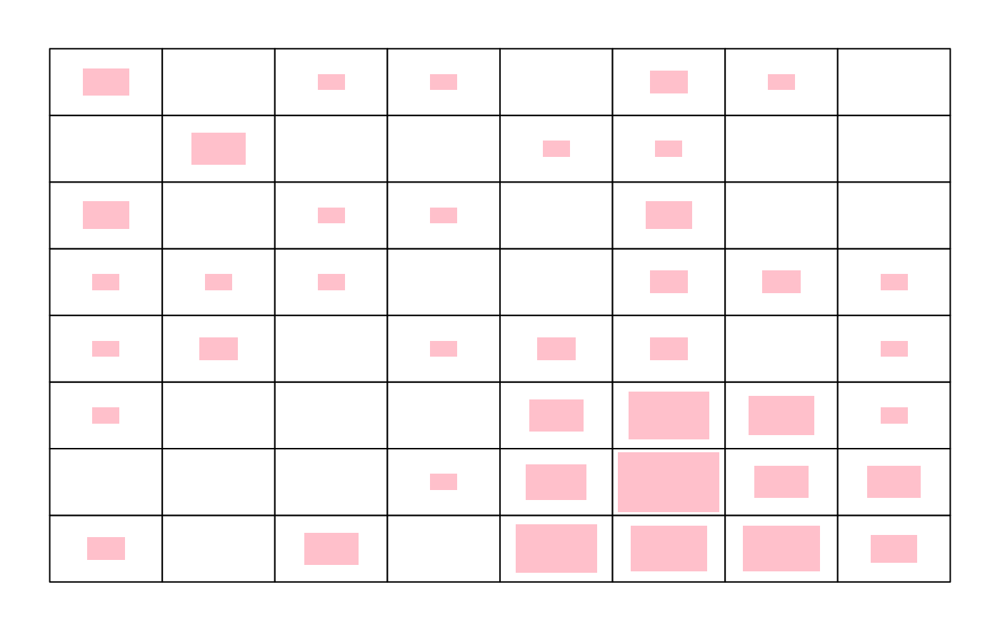
For a more precise view, "names" plot is implemented: the names of the values assigned to every neuron is displayed in the corresponding cluster. In korresp SOM, both row and column names are displayed.
plot(korresp.som, what="obs", type="names")
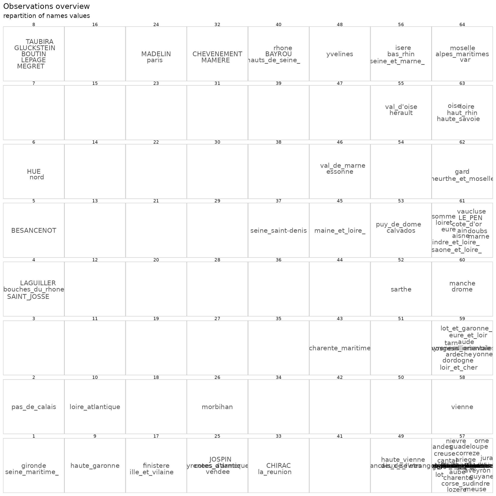
The map is divided into two main parts: minor candidates are classified at its top left hand side whereas the first main candidates CHIRAC, LE PEN and JOSPIN are classified at the bottom right hand side of the map, in three different parts of this corner. Some strinking facts are:
most of rural départements (Corrèze, Creuse, Jura, Cantal, Ariège, …) are classified in the bottom right corner, in between CHIRAC and LE PEN, who have high number of votes (compared to the other candidates) in these département;
CHIRAC is characterized by higher votes for La Réunion (oversee département) whereas LE PEN has higher votes for Indre Et Loire, Aisne, Loiret, Côte d’Or;
some well known associations, like HUE (communist party) in the Nord, are also visible on the map.
Clustering interpretation
Some graphics from the numeric SOM algorithm are still available in the korresp case. They are detailed below. As the resulting clustering provides the classification for both rows and columns, a new argument view is used to specify which one should be considered. Its possible values are either "r" for row variables (the default value) or "c" for column variables.
Graphics on prototype values
Three representations are available:
- with lines: either all rows or all columns are displayed (
viewargument is used)
# plot the line prototypes (106 French departements) plot(korresp.som, what = "prototypes", type = "lines", view = "r", show.names = TRUE) + guides(color = guide_legend(keyheight = 0.5, ncol = 2, label.theme = element_text(size = 4))) + theme(axis.text.x = element_blank(), axis.ticks.x = element_blank())
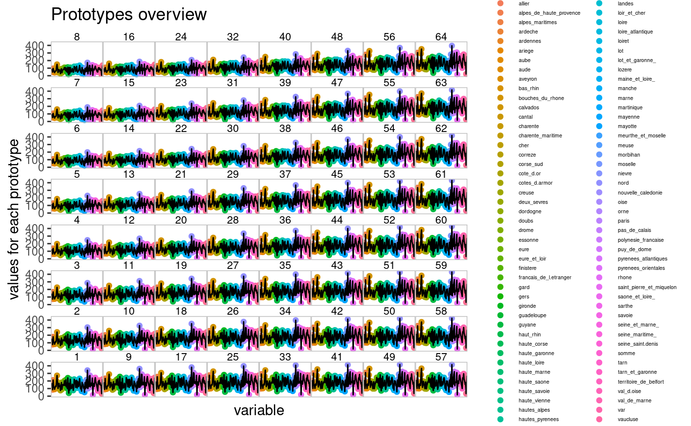
# plot the column prototypes (16 candidates) plot(korresp.som, what = "prototypes", type = "lines", view = "c", show.names = TRUE) + guides(color = guide_legend(keyheight = 0.5, ncol = 1, label.theme = element_text(size = 6))) + theme(axis.text.x = element_blank(), axis.ticks.x = element_blank())
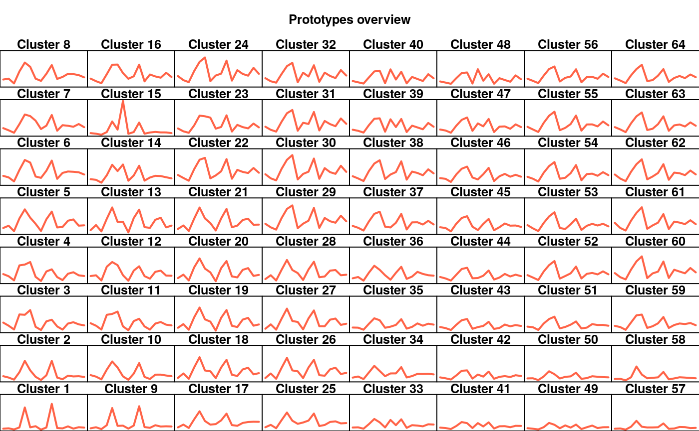
The département profiles are much flater (and with low values) in the top left corner of the map than in the bottom right corner which shows more differences between département and globally higher number of votes.
On the contrary, the candidate profiles are flater, with globally lower values in the bottom right corner of the map.
A more precise individual view are given with the graphics “color” and “3d”, here drawn, as an example for the candidate “LE PEN” and for the departement “La Réunion”. * in color: one of the row or column variable (the variable is chosen with the argument variable) is represented on the map; * in 3d, which handling is similar to "color".
plot(korresp.som, what = "prototypes", type = "color", variable = "LE_PEN")
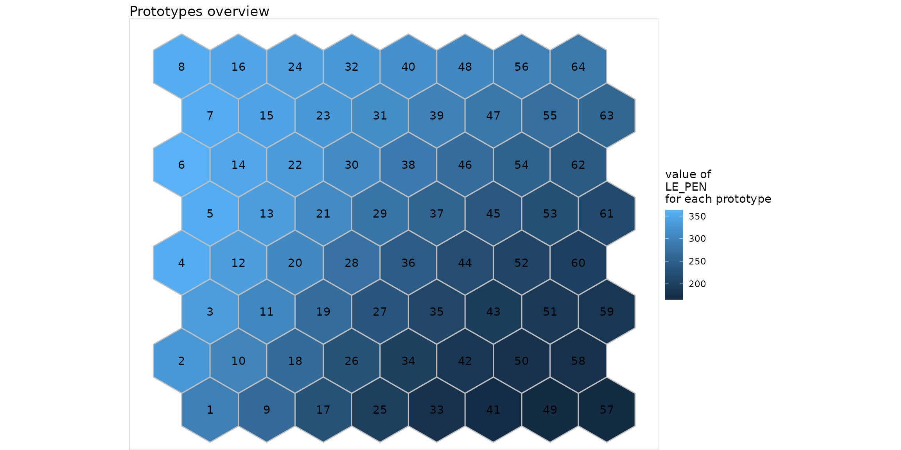
plot(korresp.som, what = "prototypes", type = "3d", variable = "la_reunion")
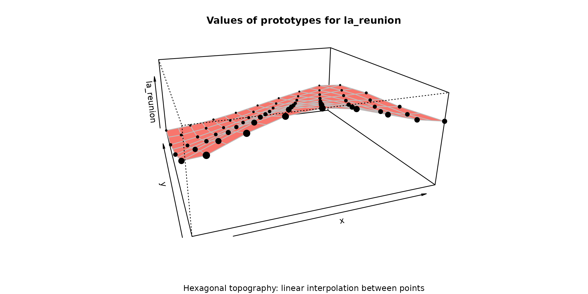
The first graphic shows that LE_PEN obtained more votes in the departements located at the top left corner of the map. The second graphic shows that the candidates that obtained the highest scores in La Réunion are located at the bottom of the map (like Chirac).
The graphics can also be drawn by giving the variable number and its type, either “r” or “c” (here, as an example, CHIRAC who is the 5th candidate, 5th column):
plot(korresp.som, what = "prototypes", type = "color", variable = 5, view = "c")
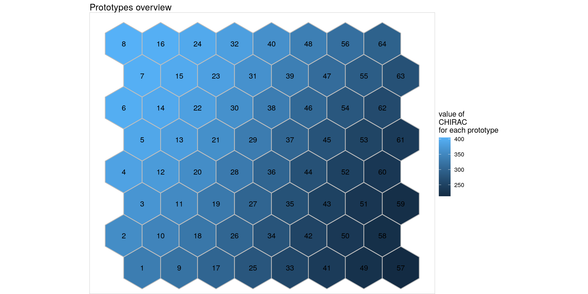
plot(korresp.som, what = "prototypes", type = "3d", variable = 5, view = "c")
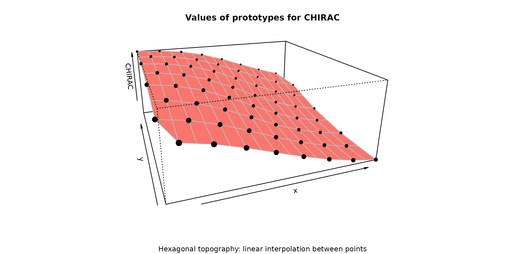
Hence CHIRAC obtained more votes in departement located at the left hand side of the map.
Graphic on prototype distances
These graphics are exactly the same as in the numerical case and provide various way to display the distance between prototypes on the grid.
plot(korresp.som, what = "prototypes", type = "poly.dist", show.names = FALSE)
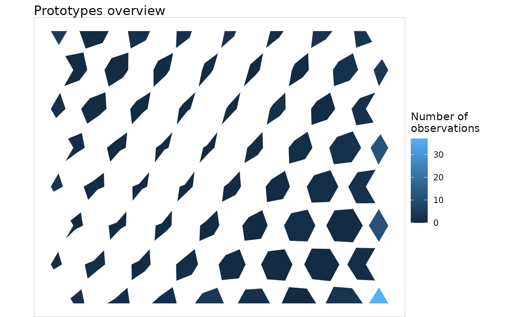
plot(korresp.som, what = "prototypes", type = "umatrix")
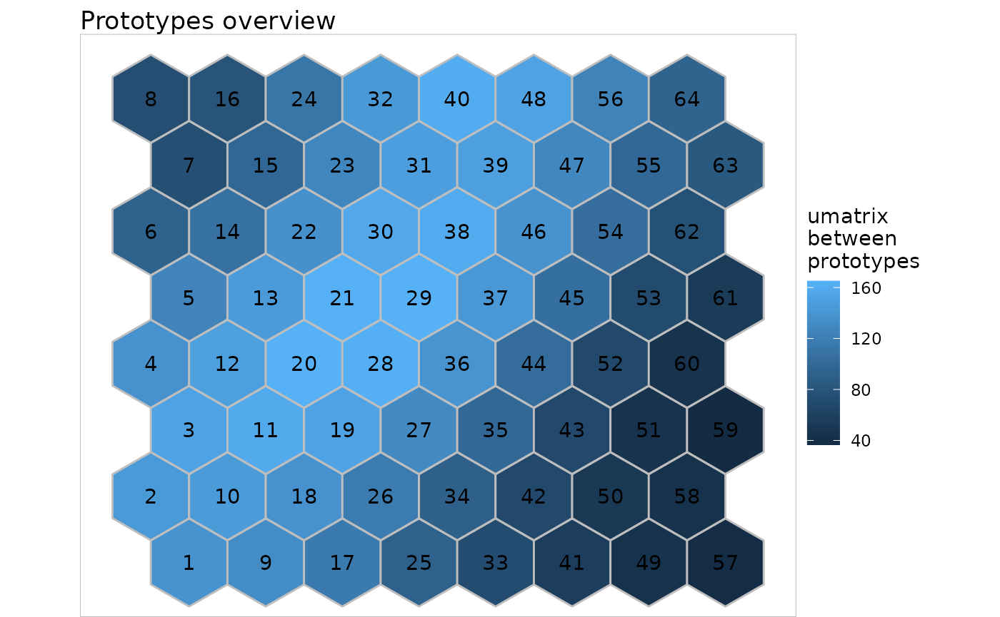
plot(korresp.som, what = "prototypes", type = "smooth.dist")
## Warning in plotPrototypes(x, type, variable, my.palette, show.names, names, : Hexagonal topograpy: imputing missing values to make a full squared grid## Warning: imputing missing values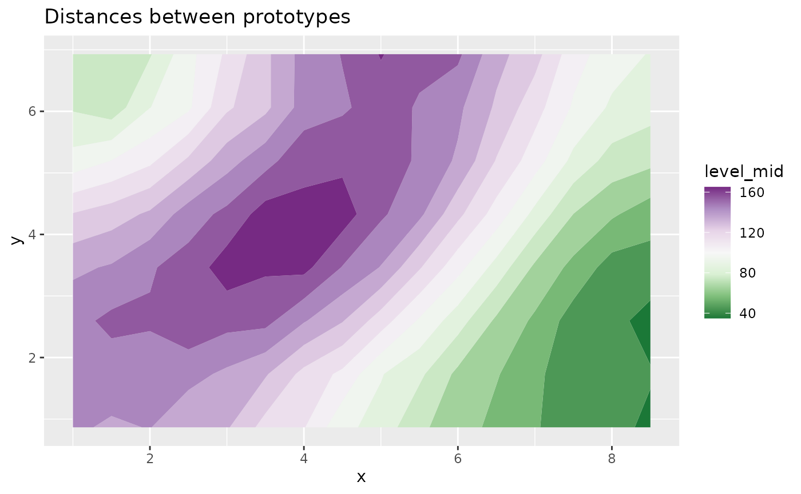
plot(korresp.som, what = "prototypes", type = "mds")
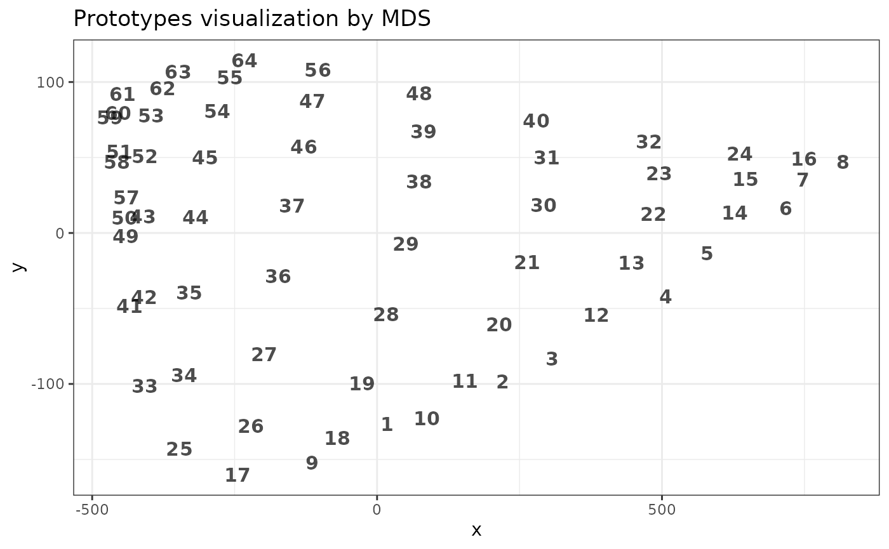
plot(korresp.som, what = "prototypes", type = "grid.dist")
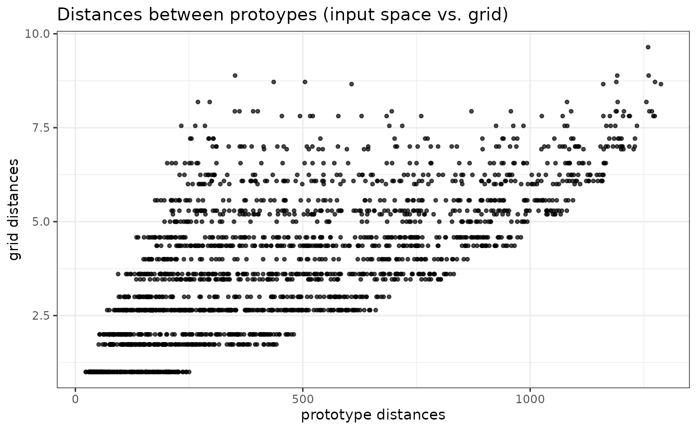
All these graphics show a clear separation between the top left corner of the map and the bottom right corner of the map.
Analyze the projection quality
The quality of the projection is provided by the function quality that outputs the same quality criteria than in the numeric case.
quality(korresp.som)
## $topographic
## [1] 0.1603774
##
## $quantization
## [1] 60033.83Building super classes from the resulting SOM
In the SOM algorithm, the number of clusters is necessarily close to the number of neurons on the grid (not necessarily equal as some neurons may have no observations assigned to them). This - quite large - number may not suit the original data for a clustering purpose.
A usual way to address clustering with SOM is to perform a hierarchical clustering on the prototypes. This clustering is directly available in the package SOMbrero using the function superClass. To do so, you can first have a quick overview to decide on the number of super clusters which suits your data.
plot(superClass(korresp.som))
## Warning in plot.somSC(superClass(korresp.som)): Impossible to plot the rectangles: no super clusters.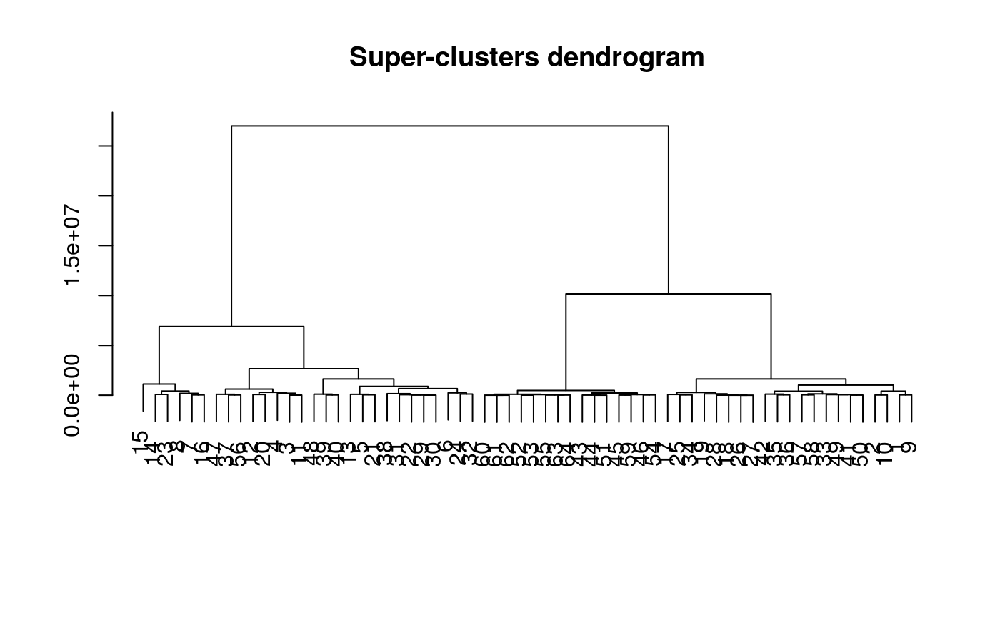
By default, the function plots both a dendrogram and the evolution of the percentage of explained variance. Here, 3 super clusters seem to be a good choice. The output of superClass is a somSC class object. Basic functions have been defined for this class:
my.sc <- superClass(korresp.som, k = 3) summary(my.sc)
##
## SOM Super Classes
## Initial number of clusters : 64
## Number of super clusters : 3
##
##
## Frequency table
## 1 2 3
## 18 14 32
##
## Clustering
## 1 2 3 4 5 6 7 8 9 10 11 12 13 14 15 16 17 18 19 20 21 22 23 24 25 26
## 1 1 1 2 2 2 2 2 1 1 1 2 2 2 2 2 3 1 1 1 1 2 2 2 3 3
## 27 28 29 30 31 32 33 34 35 36 37 38 39 40 41 42 43 44 45 46 47 48 49 50 51 52
## 3 1 1 1 1 2 3 3 3 3 3 1 1 1 3 3 3 3 3 3 3 1 3 3 3 3
## 53 54 55 56 57 58 59 60 61 62 63 64
## 3 3 3 3 3 3 3 3 3 3 3 3plot(my.sc, plot.var = FALSE)
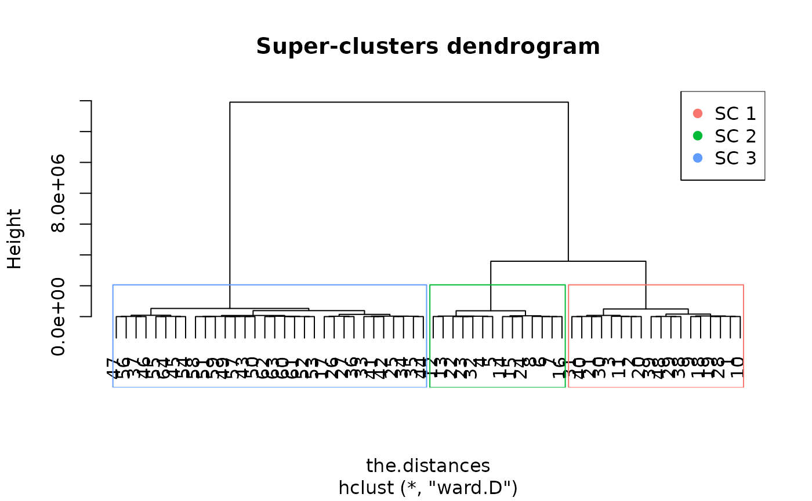
Like plot.somRes, the function plot.somSC has an argument 'type' which offers many different plots and can thus be combined with most of the graphics produced by plot.somSC:
- Case
"grid"fills the grid with colors according to the super clustering (and can provide a legend). - Case
"dendro3d"plots a 3d dendrogram.
plot(my.sc, type = "grid")
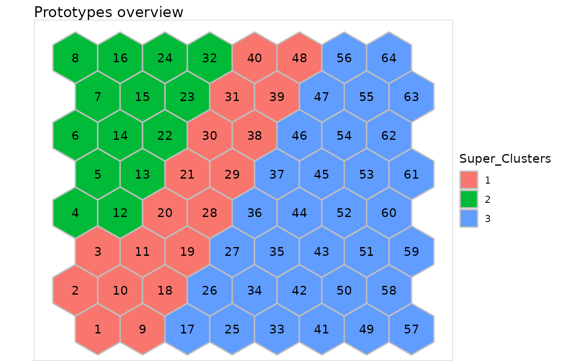
plot(my.sc, type = "dendro3d")
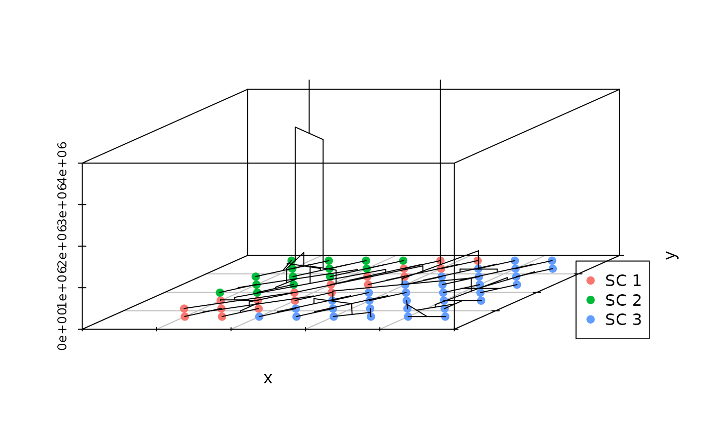
The three super-clusters correspond to most voted candidates (blue), less voted candidates (green) and, inbetween, départment with intermediate votes in which BAYROU (from one of the center party) is classified.
A couple of plots from plot.somRes are also available for the super clustering. Some identify the super clusters with colors:
plot(my.sc, what = "obs", type = "hitmap")
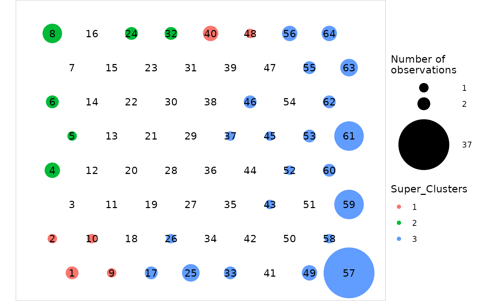
plot(my.sc, what = "prototypes", type = "lines", show.names = TRUE, view = "c")
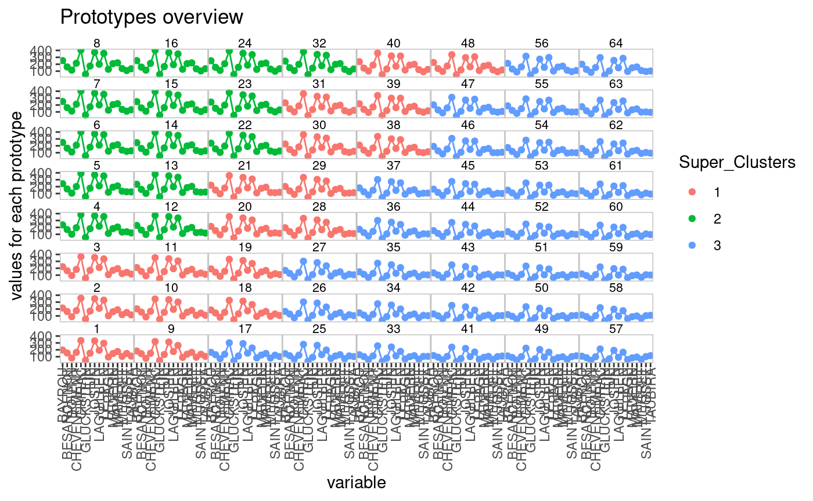
plot(my.sc, what = "prototypes", type = "poly.dist")
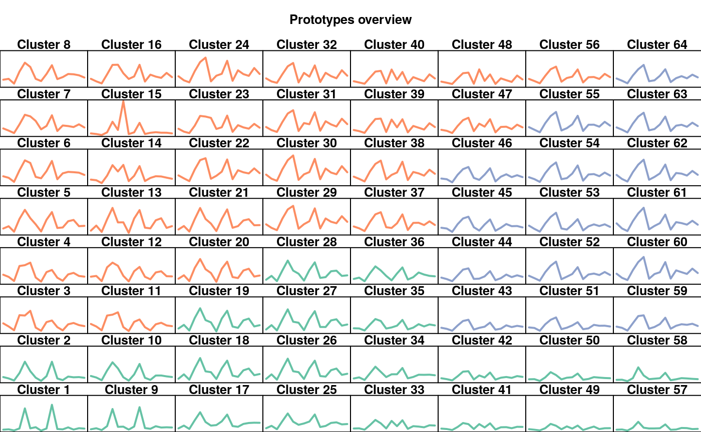
plot(my.sc, what = "prototypes", type = "mds")
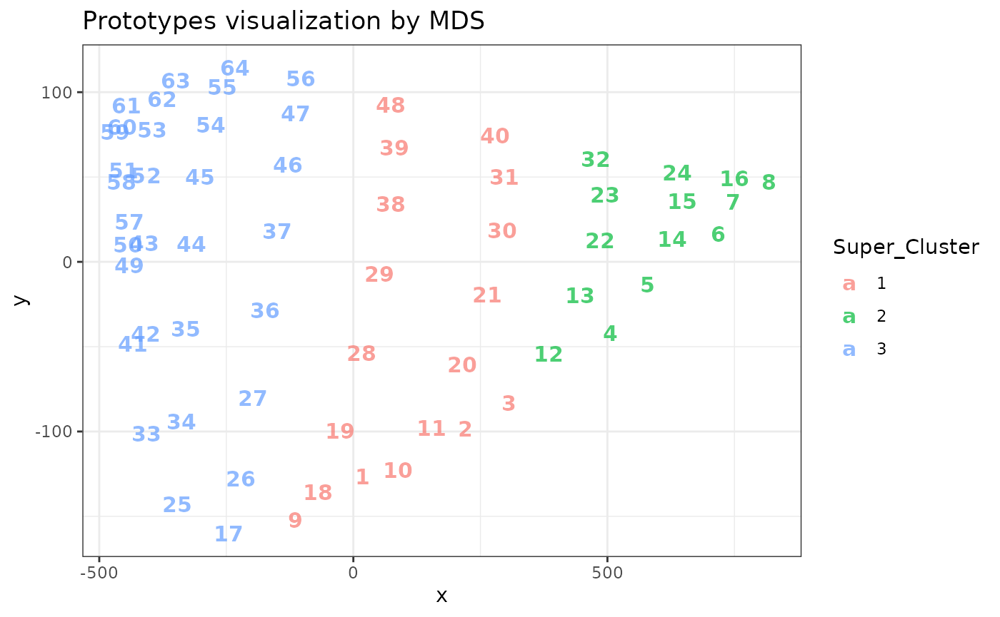
And some others identify the super clusters with titles:
plot(my.sc, what = "prototypes", type = "color", view = "r", variable = "correze")

plot(my.sc, what = "prototypes", type = "color", view = "c", variable = "JOSPIN")
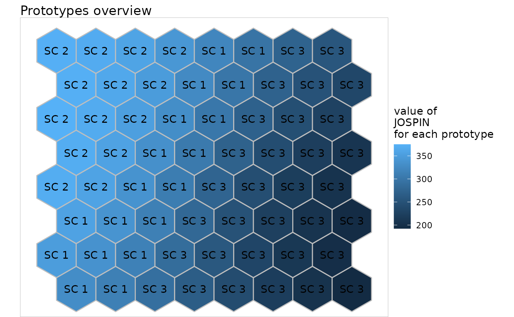
Session information
This vignette has been computed with the following environment:
## R version 4.0.2 (2020-06-22)
## Platform: x86_64-pc-linux-gnu (64-bit)
## Running under: Ubuntu 20.04.1 LTS
##
## Matrix products: default
## BLAS: /usr/lib/x86_64-linux-gnu/blas/libblas.so.3.9.0
## LAPACK: /usr/lib/x86_64-linux-gnu/lapack/liblapack.so.3.9.0
##
## locale:
## [1] LC_CTYPE=en_US.UTF-8 LC_NUMERIC=C
## [3] LC_TIME=fr_FR.UTF-8 LC_COLLATE=en_US.UTF-8
## [5] LC_MONETARY=fr_FR.UTF-8 LC_MESSAGES=en_US.UTF-8
## [7] LC_PAPER=fr_FR.UTF-8 LC_NAME=C
## [9] LC_ADDRESS=C LC_TELEPHONE=C
## [11] LC_MEASUREMENT=fr_FR.UTF-8 LC_IDENTIFICATION=C
##
## attached base packages:
## [1] stats graphics grDevices utils datasets methods base
##
## other attached packages:
## [1] SOMbrero_1.3-1 igraph_1.2.5 ggplot2_3.3.2
##
## loaded via a namespace (and not attached):
## [1] Rcpp_1.0.5 plyr_1.8.6 RColorBrewer_1.1-2
## [4] compiler_4.0.2 pillar_1.4.6 tools_4.0.2
## [7] digest_0.6.25 lattice_0.20-41 lubridate_1.7.9
## [10] checkmate_2.0.0 evaluate_0.14 memoise_1.1.0
## [13] lifecycle_0.2.0 tibble_3.0.3 gtable_0.3.0
## [16] pkgconfig_2.0.3 png_0.1-7 rlang_0.4.7
## [19] rstudioapi_0.11 yaml_2.2.1 hexbin_1.28.1
## [22] pkgdown_1.5.1 xfun_0.16 interp_1.0-33
## [25] metR_0.7.0 withr_2.2.0 stringr_1.4.0
## [28] knitr_1.29 generics_0.0.2 desc_1.2.0
## [31] fs_1.5.0 vctrs_0.3.2 scatterplot3d_0.3-41
## [34] rprojroot_1.3-2 grid_4.0.2 data.table_1.13.0
## [37] glue_1.4.1 R6_2.4.1 rmarkdown_2.3
## [40] sp_1.4-2 farver_2.0.3 deldir_0.1-28
## [43] magrittr_1.5 backports_1.1.8 scales_1.1.1
## [46] htmltools_0.5.0 ellipsis_0.3.1 MASS_7.3-51.6
## [49] ggwordcloud_0.5.0 assertthat_0.2.1 colorspace_1.4-1
## [52] labeling_0.3 stringi_1.4.6 munsell_0.5.0
## [55] crayon_1.3.4